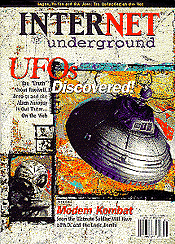
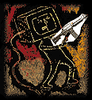
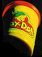

 issue 12 electric paper
November 1996
Cover Story:
How To Build a UFO...Story
by Richard Thieme
The UFO subculture or, for some, the UFO religion on the Internet, is a huge supermarket of images and words. Everything is for sale--stories and pictures, membership in a community, entire belief systems. But what are we buying? The meal? Or the menu?
Also Featuring:

The Future of War
by Michael Shapiro
In the last 100 years, modern warfare has progressed from cavalrymen mounted on horses to smart bombs, Stealth fighters and thermonuclear warheads. Heading into the next century, what new weapons pose the biggest threat? Plus: A conversation with information warfare expert Martin Libicki by Dave Sims.
On the Net with...Negativland
by Pat Sandberg
First they took on U2. Now Negativland's Mark Hosler speaks his mind about copyrights, computers, cyberspace, collages and lots of other topics that start with letters of the alphabet other than "c."

Toy Story
by Sarah Ellerman
Bringing toys out of the attic and onto the Net, collectors showcase their prize playthings on Web sites around the world. Interviews with those fanatic souls who hoard action figures, LEGO and yo-yos and live to tell their tales online.
Departments:
Top Ten:
We count up to ten, not down to one.
Flamethrower:
Find and Flame Waldo.
Weird on the Web:
Sites to peruse that amuse and confuse.